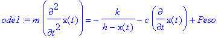
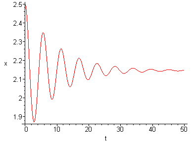

Trasformazione Isoterma - Moto Oscillatorio
G.Piluso - Marzo 2004
Supponiamo di avere un cilindro ed un pistone di massa "m". Supponendo la trasformazione isoterma, cosa succede se lo sposto dalla sua posizione di equilibrio...
>
restart:
with(plots):
with(plottools):
with(DEtools):
Equazione Differenziale e Condizioni al Contorno
> ode1:=m*diff(x(t),t$2)=-k/(h-x(t))-c*diff(x(t),t)+Peso;

> ic1:={x(0)=2.5,D(x)(0)=0}:
> sol1:=dsolve({ode1} union ic1, {x(t)},type=numeric):
Dati
>
m:=1.0:
k:=5:
c:=0.2:
h:=10.0:
g:=9.81:
Peso:=m*g:
r:=0.5:
A:=Pi*r^2:
k:=Peso*h*A:
Grafico
> odeplot(sol1,t=0..50);
